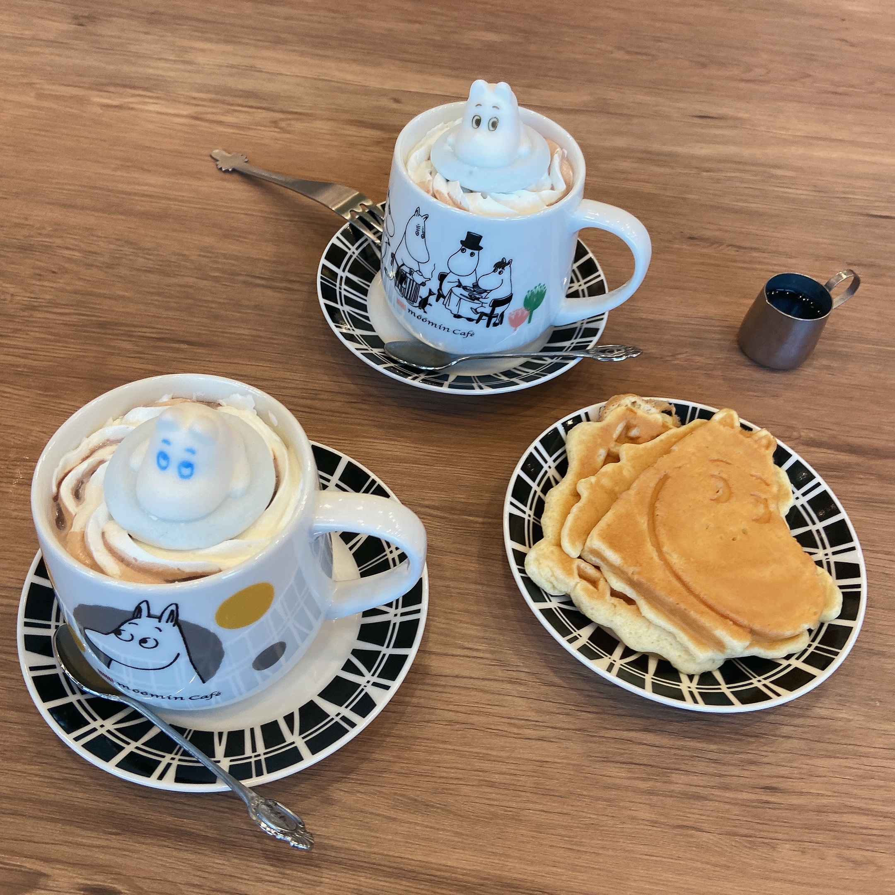
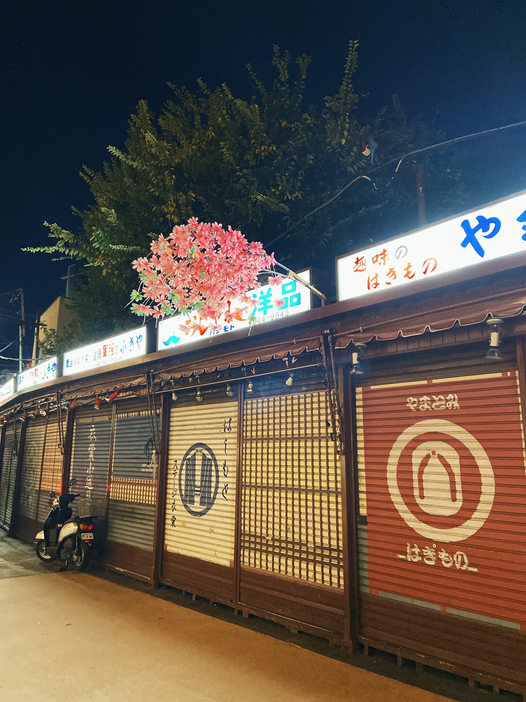
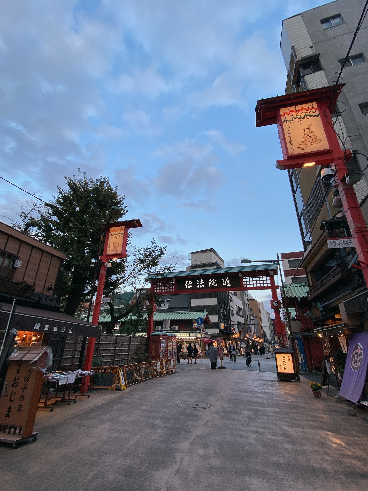
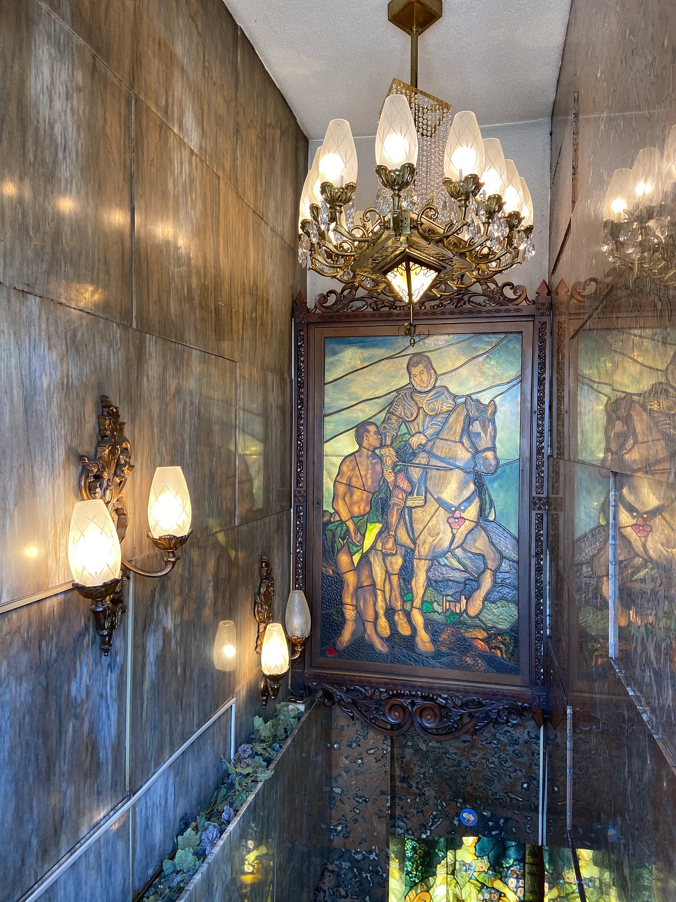

浅草と上野とムーミンと
彼女が金曜日の午後に半休を取ったので、僕もスケジュールを合わせて久しぶりに浅草方面へ一泊で行くことに。
GoToトラベル＋クーポンの組み合わせで格安でホテルをおさえて湘南新宿ラインで上野まで向かいました。上野からスカイツリーまでは、1時間コースの散歩でゆっくり向かっても良かったのですが、ムーミンカフェ（スカイツリー店）の予約をしていたので銀座線に乗ってその後スカイツリー線に乗り継ぎます。
浅草駅発車からの数分間はとても揺れましたが、車窓からの景色はとても綺麗です。浅草からスカイツリーまでの徒歩15分を電車で移動する利点はこの素敵な都市構造を絶景として見られるところにあると感じました。
お目当てのムーミンカフェスカイツリー店は場所が移動していました。去年の年末は目立たないテナントにあったのでこちらの方が通行人からのイメージが良いでしょう。
（残念ながら電話すれば無料で予約できる北欧小屋スタイルの個室はなくなった）
たまたまかもしれませんが店内は予想外に高齢の方が多く、ファン（お店のターゲット）向けのグッズ付きドリンクや食事を注文してはいないよう。日本で最も観光地のひとつでもあるこの場所の平日昼間には、ムーミンカフェに高齢の方が多く遊びに来ていて、なぜか普通のコーヒーや食事を注文していて、それを20~30代の女性が数人がかりで接客しているという現実に対して妙な違和感を覚えながらも、僕の口は「素敵な風景だねぇ」とか言ってしまいます。

そんなことを考えながらメニューを見ている僕もムーミンマニアとしての欲望には勝てず、チョコレートドリンク２杯で5000円の課金です。（マグカップが２種類ついてきます）ワッフルはファンクラブ会員なら無料でもらえるそうです。たくさん食べました。
その後、ホテルにチェックインを済ませて、浅草周辺を散歩します。 コロナの影響で観光客がガラッと減っている浅草でしたが、その風景はとても美しく見えました。
少しずつ辺りが暗くなってくると、外灯がシャッターを照らして寂しい印象が強くなってきます。夜になると外国人の観光客が銀座や渋谷に向かい一気に一通りが少なくなるのが浅草のイメージでしたが、現在は夕刻にはすでに人が少なくなっていました。

コロナ間でインバウンド需要が消えたと言われていましたが、嬉しいことに界隈（かいわい）を周遊している人力車は時々見かけることができました。数少ない観光客を乗せて走りながら、張りの良い声で下町を語る姿からは「この場所を守っていく」という責任のようなものが伝わってきました
人通りが寂しくなる中で外灯に照らされながら無言で店を閉める職人の姿を見てると、ここが歴史的保存地区の下町であるというリアリティーを感じさせます。
数年ぶりに浅草寺界隈を散歩していて感じたのは、地域発展とは新しいものだけではなく、古きものと共にあることである種の混沌とした状況が活気ある文化を形成しているんだなということです。
かつて浅草に来ていた僕は、人混みや、あちこちから聞こえる多言語の会話からの情報量が多くて、歩いていてもこの混沌を感じることはできませんでした。人の少ない今はそれを存分に感じられます。
多分浅草に感じるこの”混沌感”は、下町にとってすごく重要な要素なんだろうなと感じました。

例えば今僕が住んでいる場所の程近くにある鎌倉も同じように古くからある観光地として有名で、観光客向けに作られています。なのになぜ僕は鎌倉には上質な風景や空気はあれど、浅草のような下町感を感じないのか？
江戸の風俗史を調べると、江戸時代からすでに観光地だった浅草のすぐ近くに吉原があり、吉原に行く武士やお金を持っている町人にとって浅草を「お参りに行ってくる」という口実に使われていたという情報があったりします。
当時の浅草には多くの（お金を持つ）人が集まり、昼から呑んで夜は吉原に行く。そのため多くの観光客向けのお店ができる。あるひとつの観点から見ると、吉原という文化がないと現在のような浅草はなかったかもしれないという歴史の積み重ねが、浅草の持つ”混沌感”を作っているのかもしれません。
夜食は屋台で串カツと土手煮込みで乾杯して、そのあとはまた少し歩いて締めにたぬき蕎麦を食べました。 濃いめの出汁と蕎麦に対して、ざく切りの玉ねぎと大きめの揚げ玉が優しい甘みを出していて非常に美味しかったです。
一夜明けて翌日は合羽橋付近をフラフラした後、上野方面に向かって散歩しました。 田原町〜稲荷町周辺には、音楽家時代に友人の家があったので一時期よく来ていたのを思い出します。（僕は当時上野付近の音楽教室で先生もしていました）
下谷神社の近くまで向かい、久々に高級喫茶「古城」に行きました。 店内はまさにレトロな高級喫茶です。実は高級喫茶と書いていますが値段は良心的で、きっと全国の喫茶店の平均ほどです。

上野周辺には私が「ファッション（ビジネス）純喫茶」と言っているような人工的なレトロ感の店が多いのですが、古城は空間も味も満足でいわゆる純喫茶女子が求めている本物の純喫茶だと言えます。 店内の奥の方は、よくテレビドラマのワンシーンに店内が使われてたりもします。
（ちなみにまだ紙タバコが吸える稀有な場所でもあります）
ここでだらだら珈琲を飲んだ後は、上野動物園を諦めて電車に乗って家に帰るのでした。
「どこか行こうか？」「うーん」「帰るか」「迷うねぇ」を１年前にこの店にきた時と同じように延々と繰り返す僕と彼女は、こんなとき必ずアクティブでないほう（この場合帰るほう）を選びます。